El equipo de Scariolo rompió el dominio del Caja San Fernando con un parcial de 3-20 en la segunda parte.
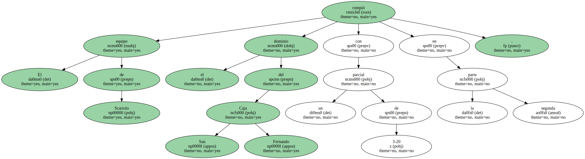El Tau Cerámica de Vitoria pide paso.
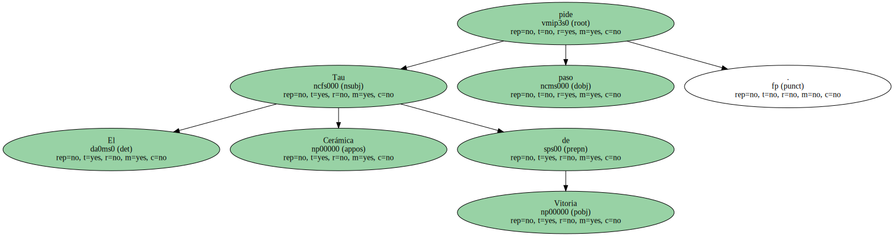El equipo vasco está dispuesto a que deje de hablarse , de forma definitiva , de Barça y Madrid como los dos grandes del baloncesto español.
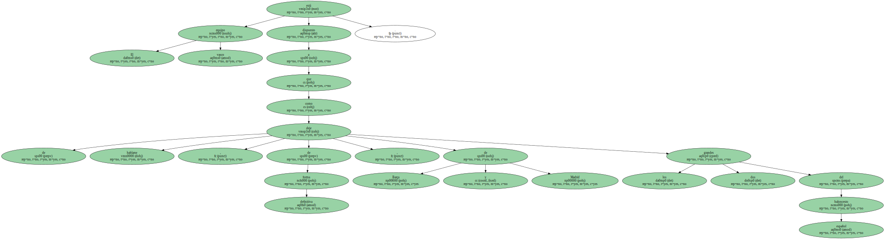Ayer en Valencia consiguió resarcirse con el título de Copa , el segundo de su historia , de la amarga decepción que vivió el pasado año en la final de la Liga ACB ante el TDK.
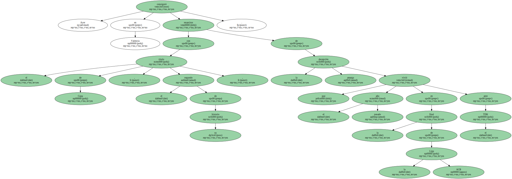El equipo de Sergio Scariolo , además , hizo una demostración de carácter ante el Caja San Fernando.

Cuando mejor pintaban las cosas para los sevillanos , el Tau pasó por encima de su rival como una apisonadora.
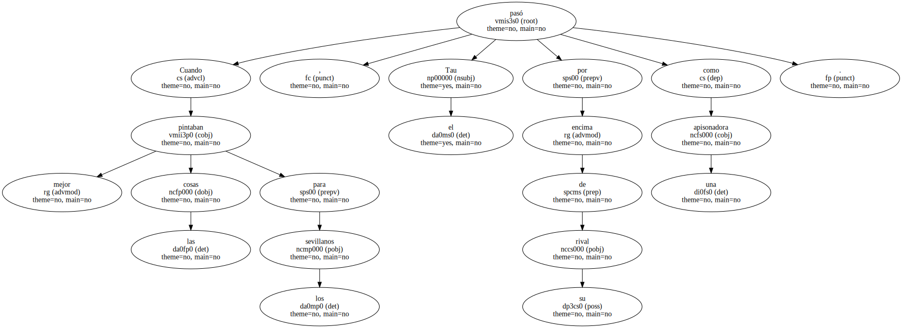La final se planteó como un combate de resistencia.
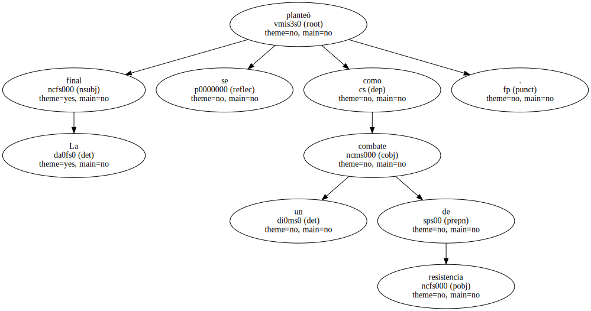En una competición que obliga a ganar tres partidos en cuatro días , estaba claro que saldría ganador el equipo con mayores recursos , físicos y tácticos.
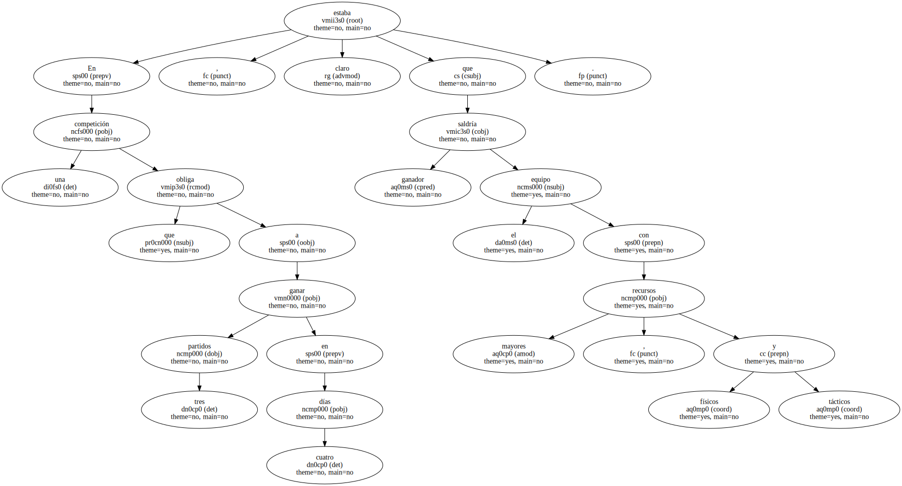El Caja San Fernando pareció en el buen camino para lograr su primer título.
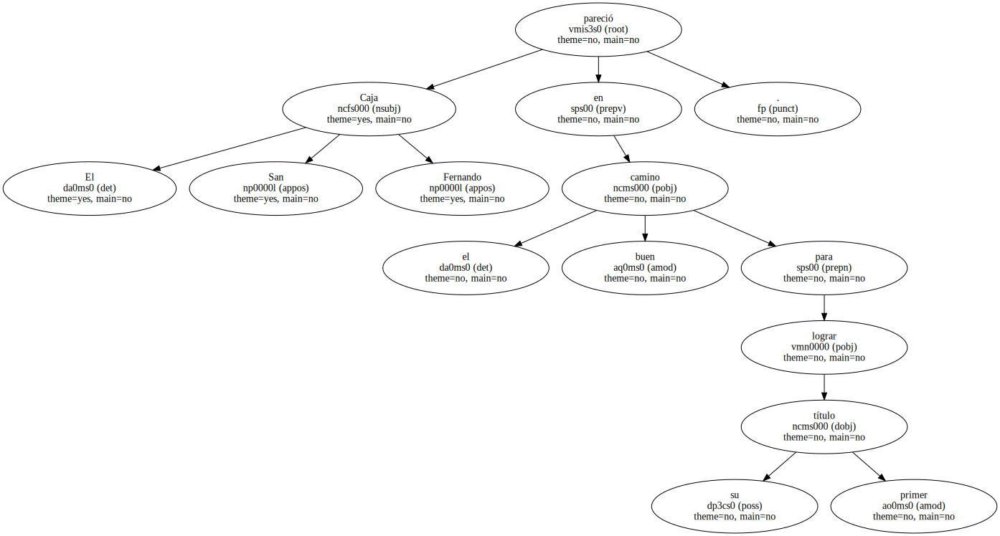El equipo sevillano llevó el mando del partido durante 25 minutos.
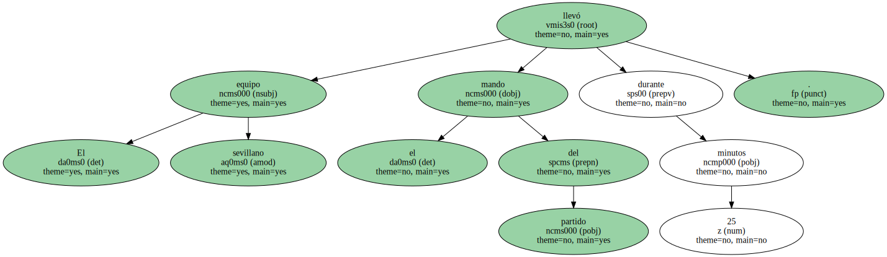Llegó , incluso , a ponerse por delante con un 42-31.
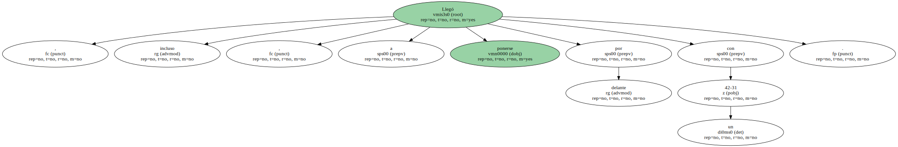Era un marcador ideal para un equipo que sabe administrar sus rentas bajo la batuta de Andre Turner , como había demostrado en la semifinal ante el Barcelona.
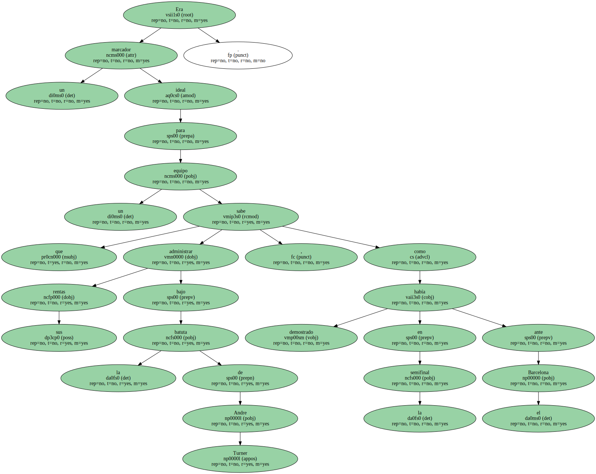Pero el Tau no estaba dispuesto a tirar la toalla.

Empezó a defender con saña.
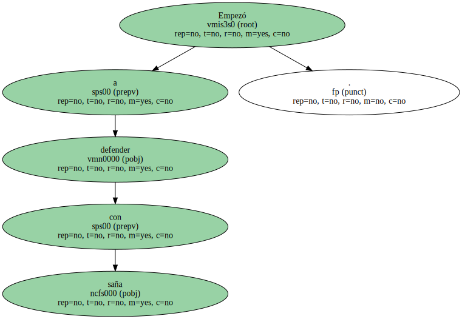Poco a poco minó la moral de su rival.
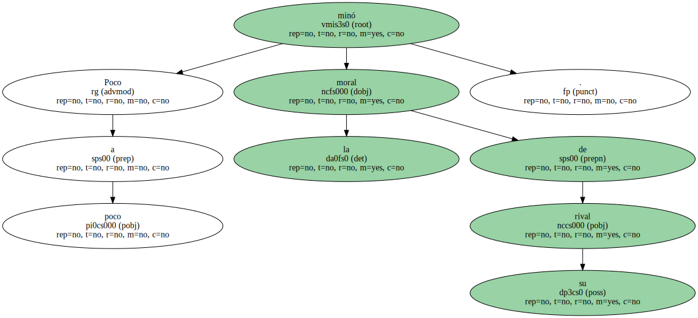Rusconi , bregado en mil batallas en la Liga italiana , se hizo dueño de la canasta sevillana , y Bennett se comió a Turner y a quien se puso por delante.
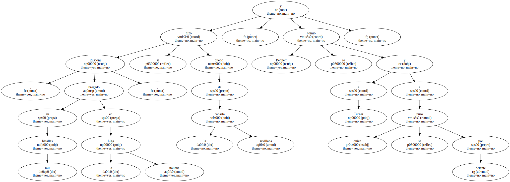No dudó incluso en estamparle en la cara a Smith un mate descomunal , pese a que sólo mide 1,83.
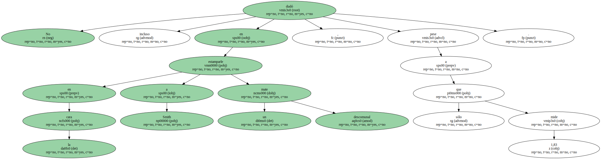El Tau fraguó en siete minutos un parcial de 3-20 que decantó el duelo.
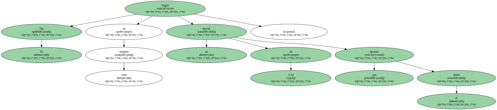En esa racha inspirada de los vitorianos , el Caja San Fernando apareció como un juguete roto , sin capacidad de respuesta.
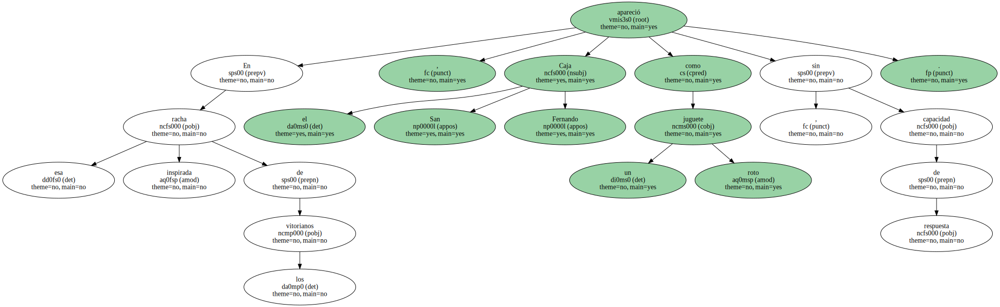Una momentánea lesión de Turner dejó al equipo de Imbroda sin su líder durante más de dos minutos.
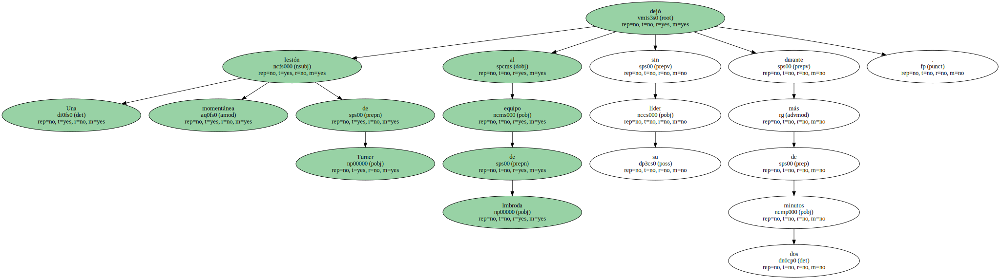La baja de Salva Díez , lesionado ante el Barça , agravó aún más el problema.
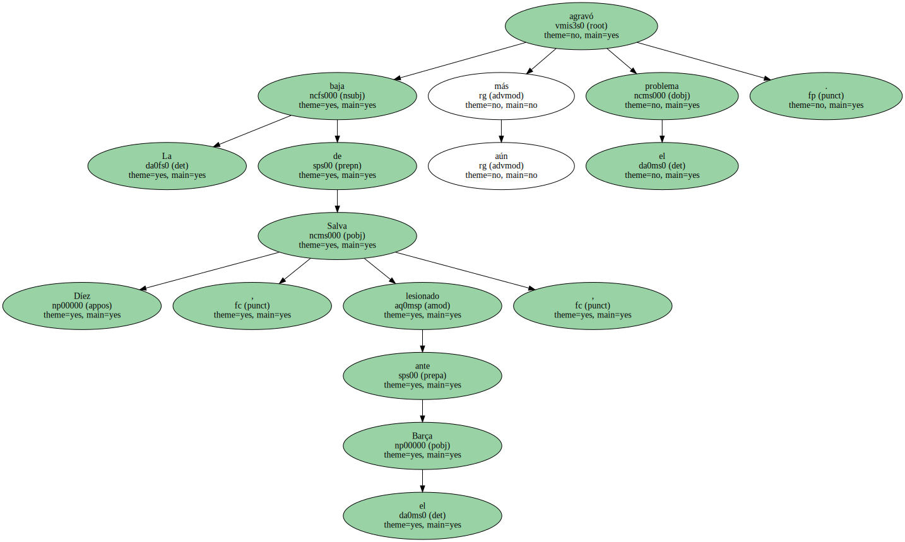Cuando volvió Turner , quedaba tiempo para la remontada.
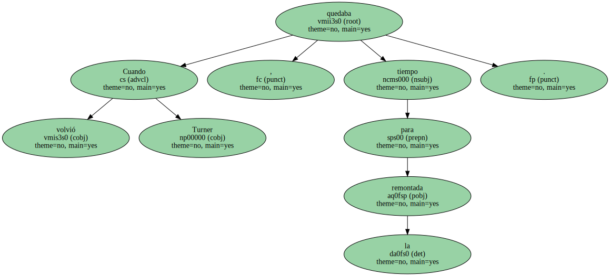Pero lo que no tenía ya el Caja San Fernando era confianza.
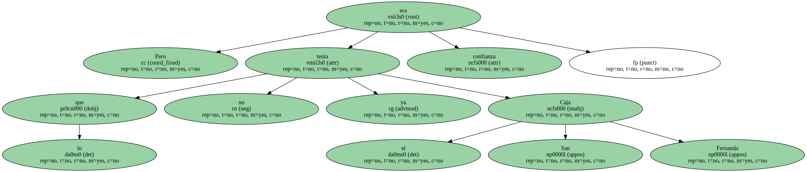El golpe del Tau había sido demoledor.
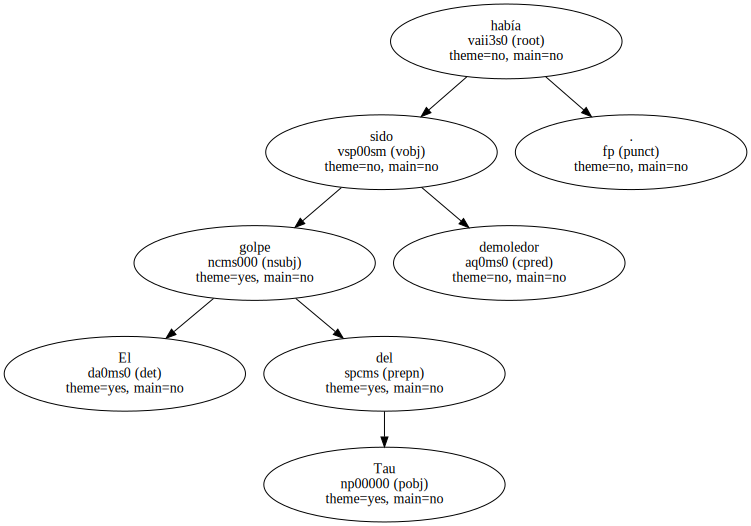Turner falló sus ocho intentos de triples , y Scott , el otro líder del equipo , se veía impotente tras el descanso ante Anthony Bonner , un rocoso pívot forjado en la escuela de los Knicks que dota al Tau de una terrible fuerza bajo canasta.
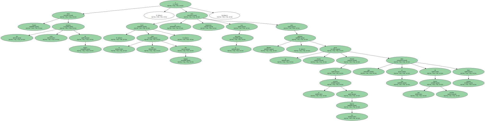En el año de la revitalización del baloncesto español , con el quinto puesto de la selección en el Mundobasket , la final entre el Tau y el Caja San Fernando frenó esta euforia.

Entre los diez titulares que iniciaron el partido sólo había un jugador nacido en España , Romero ( Caja San Fernando ) , y el campeón es el equipo que más partido saca a la posibilidad de fichar comunitarios.
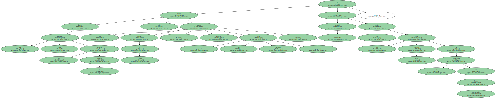Eso sí , Jordi Millera , un barcelonés formado en el Bosco Horta y en Granollers a la sombra de Joan Creus , recogió la Copa como capitán del Tau.
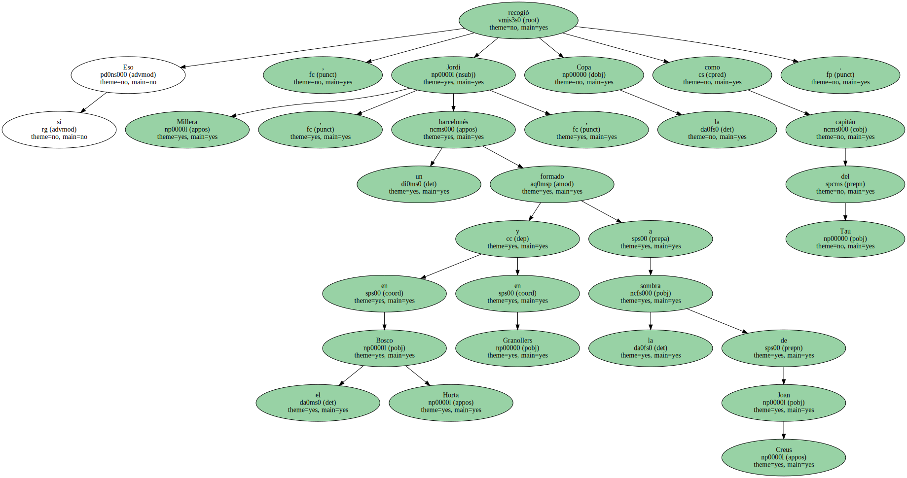